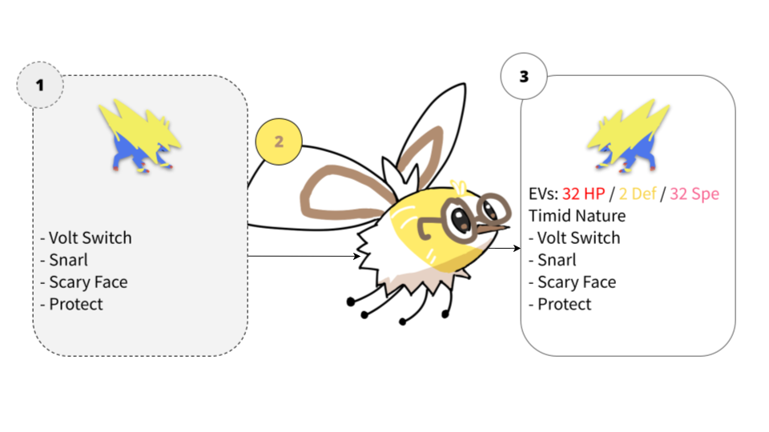
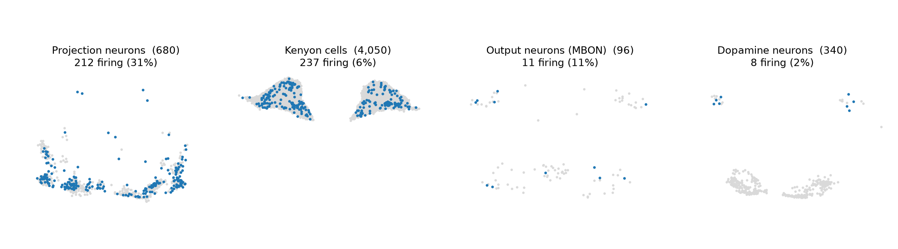
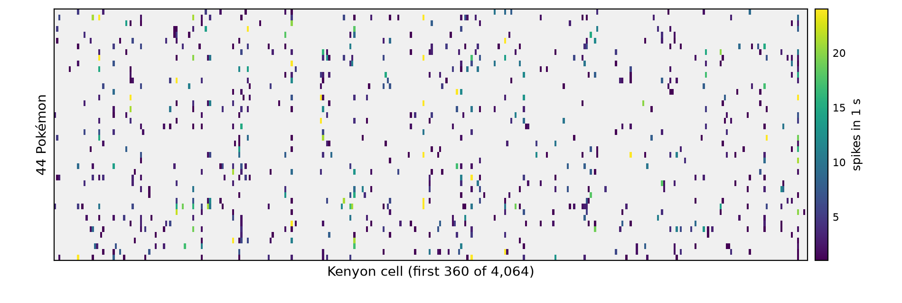
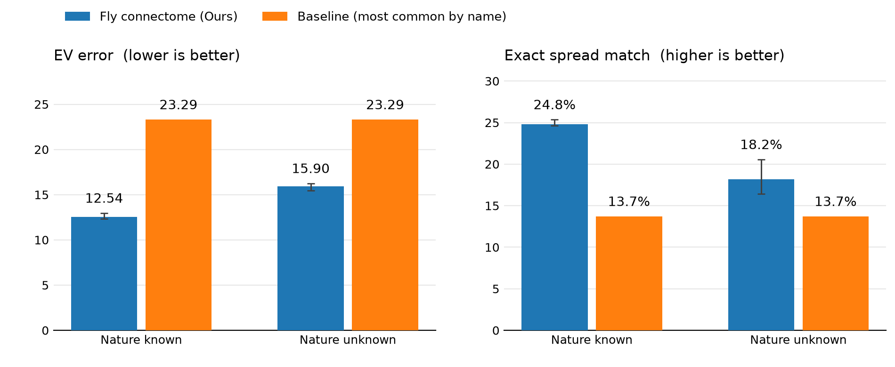

프로젝트 소개
VGC Open Team Sheet(OTS)만 보고 상대 포켓몬의 숨겨진 노력치와 성격을 알 수 있을까요?
실제 초파리 커넥톰에서 가져온 버섯체(mushroom body)를 이용해 정보를 처리하고, 그 반응으로 숨겨진 배틀 정보를 추정해보았습니다. 포켓몬 배틀 데이터에 실제 생물학적 신경회로를 적용하면 어떤 결과가 나오는지 확인한 프로젝트입니다.
전체 구조

1. 공개된 OTS 정보를 포켓몬별 입력으로 변환하고,
2. 실제 초파리 커넥톰에서 가져온 버섯체 회로를 거쳐 반응을 만듭니다.
3. 이 반응을 학습에 이용해 공개되지 않은 노력치와 성격을 추정합니다.
이 포켓몬이 입력되면 무슨 일이 일어날까?
OTS에 적힌 이름 하나하나, 그러니까 포켓몬과 지닌 물건과 특성과 기술 네 개를 각각 투사뉴런 다섯 개에 배정합니다. 냄새 분자를 받아들이는 바로 그 경로입니다. 배정된 투사뉴런을 150Hz로 1초 동안 자극하고, 버섯체를 이루는 뉴런 5,191개를 LIF 모델로 시뮬레이션했습니다. 아래는 그렇게 얻은 반응입니다.

포켓몬 하나를 입력했을 때 어떤 뉴런이 반응하는지를 확인했습니다. 전체 뉴런이 모두 켜지는 것이 아니라 일부 뉴런에서 선택적인 반응이 나타납니다.

이렇게 만들어진 반응을 Kenyon Cell(KC) 수준에서 보면 대부분의 세포는 반응하지 않고 일부 세포만 활성화됩니다. 포켓몬마다 활성화되는 세포의 조합이 달라지면서 서로 다른 반응 패턴이 만들어집니다.
파티가 바뀌면 반응도 바뀔까?
같은 포켓몬이라도 혼자 입력했을 때와 팀의 일부로 입력했을 때는 같은 반응이 나타나지 않습니다. 실제 대회(WCS 2026)에서 사용된, 모두 리자몽을 포함한 네 개의 팀을 비교했습니다. 시뮬레이션의 잡음이 팀 차이로 보이지 않도록 같은 뉴런에는 같은 입력이 들어가게 맞춘 뒤 비교했으므로, 아래 차이는 전부 팀 구성에서 온 것입니다. 입력 쪽에서는 네 팀이 자극하는 투사뉴런이 133~137개이고 그중 62개는 네 팀이 모두 공유합니다. 그런데 버섯체를 거치고 나면 켜지는 Kenyon cell은 팀마다 141~229개이고, 네 팀 모두에서 켜지는 것은 4,064개 중 서른 개뿐이었습니다. 입력의 절반가량이 겹쳐도 출력은 거의 겹치지 않는 셈으로, 팀에 어떤 포켓몬이 함께 들어 있는지에 따라 반응 패턴이 달라졌습니다.
얼마나 맞히나
실험을 진행할 당시에는 레귤레이션 M-C가 시작된 지 얼마 되지 않아 충분한 데이터를 확보하기 어려웠습니다. 따라서 공개된 레귤레이션 M-A와 M-B의 약 1,700개 팀으로 학습하고, 레귤레이션 M-C의 팀을 이용해 테스트했습니다. 비교를 위해 각 포켓몬이 주로 사용하는 노력치 배분을 이용한 최빈값 기준선을 만들었습니다. 그리고 성격이 적혀 있는 경우(성격을 알 때)와 성격까지 맞혀야 하는 경우(성격을 모를 때)를 나눠서 측정했습니다.

테스트 결과 버섯체 회로 기반 모델은 성격을 알 때 EV 오차 약 12점과 여섯 스탯 완전 일치율 약 25%, 성격을 모를 때 약 16점과 18%를 기록했고, 최빈값 기준선은 두 경우 모두 약 23점과 14%였습니다. 기준선과의 격차는 학습 데이터에 없던 포켓몬에서 가장 크게 벌어졌고, 관습적인 배분에서 벗어난 개체에서도 이점이 유지됐습니다. 다만 노력치와 달리 성격은 처음 보는 포켓몬에서 약했는데, 이는 아래에서 다룹니다.
못하는 것과 한계
1. 처음 본 포켓몬에서는 어려움을 겪습니다.
이 과정에서 학습 데이터에 존재하지 않던 포켓몬이나 특성, 기술이 포함된 경우 성격 예측이 특히 어려워지는 모습을 확인했습니다. 예를 들어 고릴타는 이전 데이터에 등장하지 않았으며, 특성인 그래스메이커와 기술인 그래스슬라이더 역시 학습 데이터에 없었습니다. 이 경우에 모델은 기술 '우드해머'에 집중해서, 성격을 '고집'이 아닌 '용감'으로 예측하는 모습을 보였습니다. 학습 데이터에서 '우드해머'를 사용하는 포켓몬은 모두 상대적으로 느린 포켓몬이었기 때문에, 이러한 정보가 모델의 예측에 영향을 준 것으로 보입니다.
2. VGC가 아닌 포맷에 대한 검증이 없습니다.
이번 실험은 VGC 팀만을 대상으로 진행했습니다. 따라서 싱글(BSS) 팀에 대해서는 별도의 검증을 진행하지 않았습니다. 싱글과 VGC는 같은 포켓몬을 사용하더라도 팀을 구성하는 방식과 요구되는 전략이 다르고, 포켓몬의 역할이나 노력치 배분 역시 달라질 수 있습니다. 이번 프로젝트에서 학습한 패턴이 이러한 차이에도 그대로 적용될 것인지는 확인하지 않았습니다. 따라서 현재 결과만으로 싱글 배틀의 노력치나 성격도 비슷한 수준으로 예측할 수 있다고 말하기는 어렵습니다.
3. 이 문제에는 아직 뚜렷한 기준선이 없습니다.
OTS 정보만으로 포켓몬의 숨겨진 노력치와 성격을 추정하는 방법이나 기준 모델 중 널리 쓰이는 것이 없어, 이번 실험에서는 포켓몬별 최빈값을 이용한 간단한 기준선을 직접 구성해 비교했습니다. 따라서 다른 모델을 추가로 만든다고 하더라도 어떤 방법을 기준으로 성능을 비교해야 하는지에 대한 명확한 답은 아직 없습니다. 향후 이 문제에 적합한 비교 방법이 정립된다면, 보다 다양한 모델과의 비교가 가능할 것입니다.
결론
읽을 수 있습니다. 다만 실제 대전에서 상대 팀의 세부를 예측하는 데 쓸 만한지는 아직 다른 문제입니다. 중요한 것은 배선을 손대지 않았다는 점입니다. 버섯체 5,191개 뉴런의 연결은 MaleCNS 커넥톰 그대로이고, 학습으로 바뀐 것은 Kenyon cell에서 출력으로 가는 시냅스의 세기뿐입니다. 냄새를 구별하려고 만들어진 회로에 포켓몬 이름을 냄새처럼 넣어도, 노력치와 성격을 가르는 데 쓸 만한 패턴이 만들어졌습니다.
가장 뜻밖이었던 것은 처음 보는 포켓몬 쪽입니다. 최빈값이 손을 못 대는 자리에서 기준선과의 격차가 가장 크게 벌어졌습니다. 반대로 성격은 같은 자리에서 약했는데, 남아 있는 기술 몇 개에 과하게 끌려간 탓으로 보입니다. 팀 구성에 따라 반응이 달라진 것도 이 회로가 OTS를 한 마리씩이 아니라 여섯 마리 묶음으로 읽고 있다는 뜻입니다.
부록 A
WCS 2014 파티(박세준 파치리스 파티)를 초파리 커넥톰으로 예측한 결과:
https://pokepast.es/14b7f40081dec478
일단 모델이 파치리스와 고디모아젤을 본 적이 없습니다. 그리고 원본은 파이어로가 천진난만 성격에 공격과 특수 공격을 명확한 계산을 통해 분배한 모습이지만, 모델의 예측에서는 그냥 공격과 스피드 보정만 한 것을 알 수 있습니다. 전반적으로 공격적인 성격에서는 극보정을 하는 모습을 보였고, 내구를 챙기는 성격에서는 뭔가 적절한 배분을 찾으려는 노력을 확인했습니다.
BibTeX
@misc{eunha2026flypaste,
title={Can a Fly Brain Read Pok\'emon Open Team Sheets?},
author={Eunhavgc},
year={2026},
note={MaleCNS connectome mushroom body for EV spread and nature recovery},
howpublished={\url{https://eunhavgc.github.io/flypaste/}}
}